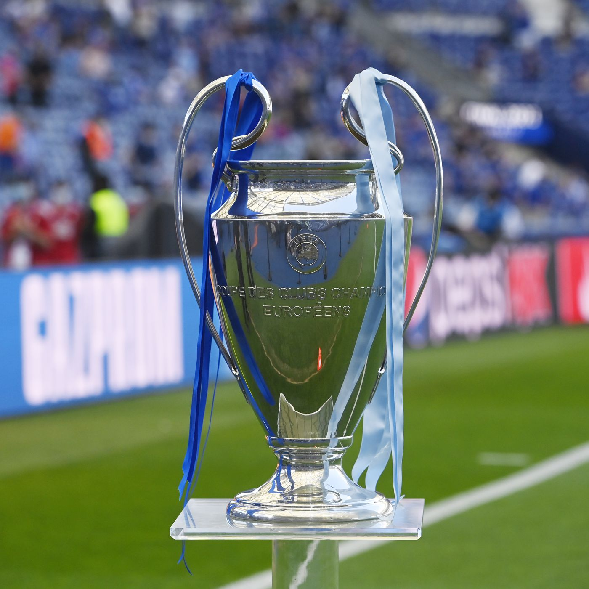

Major League Soccer (MLS) is a men's professional soccer league sanctioned by the United States Soccer Federation, which represents the sport's highest level in the United States. The league comprises 28 teams—25 in the U.S. and 3 in Canada—and plans to expand to 30 teams by the 2023 season.[5][6][7][8][9] Although not one of the "Big Four", the MLS, along with the Canadian Football League, is considered one of the "Big Six" major professional sports leagues in the United States and Canada.The league is headquartered in Midtown Manhattan.
Major League Soccer is the most recent of a series of men's premier professional national soccer leagues established in the United States and Canada. The predecessor of MLS was the North American Soccer League (NASL), which existed from 1968 until 1984.The MLS was founded in 1993 as part of the United States' successful bid to host the 1994 FIFA World Cup.[13] The inaugural season took place in 1996 with ten teams. MLS experienced financial and operational struggles in its first few years, losing millions of dollars and folding two teams in 2002.
Since then, developments such as the proliferation of soccer-specific stadiums around the league, implementation of the Designated Player Rule allowing teams to sign star players such as David Beckham, and national TV contracts have made MLS profitable.[16] With an average attendance of over 20,000 per game, MLS has the fourth-highest average attendance of any professional sports league in the U.S. and Canada after the National Football League (NFL) and Major League Baseball (MLB), and Canadian Football League (CFL) and was the seventh-highest attended professional soccer league worldwide by 2013.
MLS League
